创意：俩两。
文：李大虾
正文共计4200字左右
预计阅读时间8min
转载请在后台回复“授权”
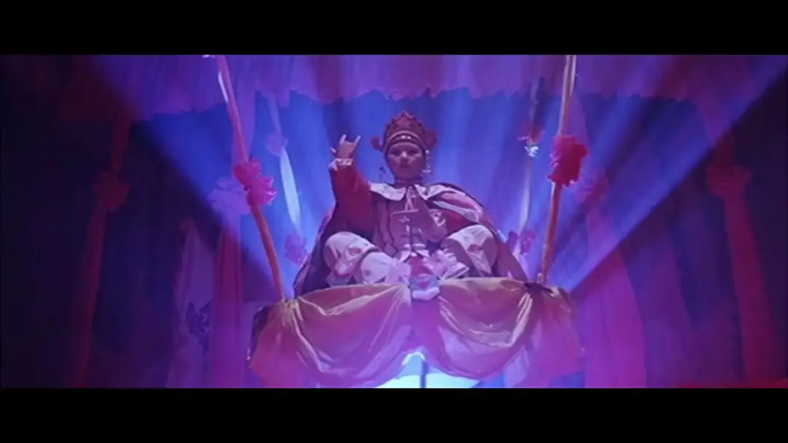
人类历史某种程度上是一部偶像崇拜史。
过去崇拜的是图腾、大自然、君王、宗教、国家、民族。
进入现代社会后，个人主义、科学主义盛行，造神运动却依旧没有停歇。
现在有歌神、赌神、颜值之神、割韭菜大神、三和大神.....
任何一种需要，任何一种欲望，任何一种生活，都能投射出无数的偶像。
这种现象深入人类骨髓，几乎是难以改变的。
20世纪，有一伙人就一边唱着从来都没有救世主，一边拆寺庙、拔祖坟，势要消灭一切牛鬼蛇神。
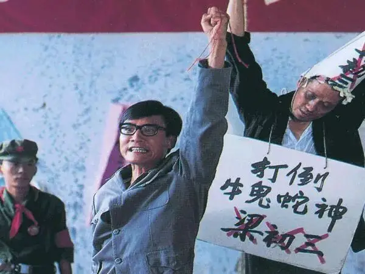
可讽刺的是，20世纪最大的偶像崇拜却诞生在这些国家，并令无数人成为了造神运动的牺牲品。
所以，人类一直需要偶像，即使是虚假的希望，也一定会寻找一个。
最可怕的是，偶像不仅是虚假的，还是别有用心和邪恶的。
置身那样的偶像世界，最需要的就是打假！
而在华语电影中，徐克绝对是个“打假”砖家。
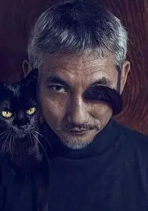
1950年，徐克出生于越南一个华侨家庭。
他在越南生活了16年。
这十六年里，法国和越南交战，之后越南分裂南北分治，接着是1960年代的越南战争，更恐怖的红色高棉也在暗暗发酵.....
死亡、欺骗、人性的丑陋和光辉都展露无遗。
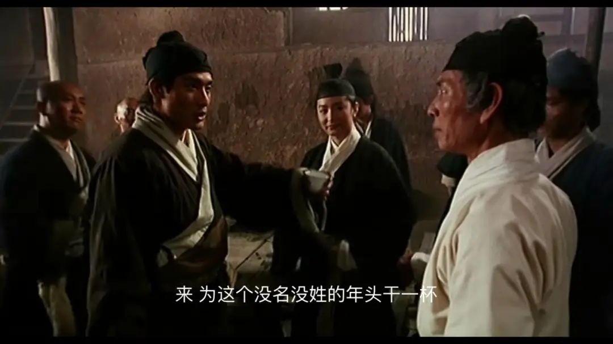
这样的成长经历，徐克自然对多元文化冲突、动荡不安的明朝历史非常感兴趣。
所以，在他的武侠片中，总是以明朝为背景，举目天下，民贫官贪，男盗女娼，国无宁日。
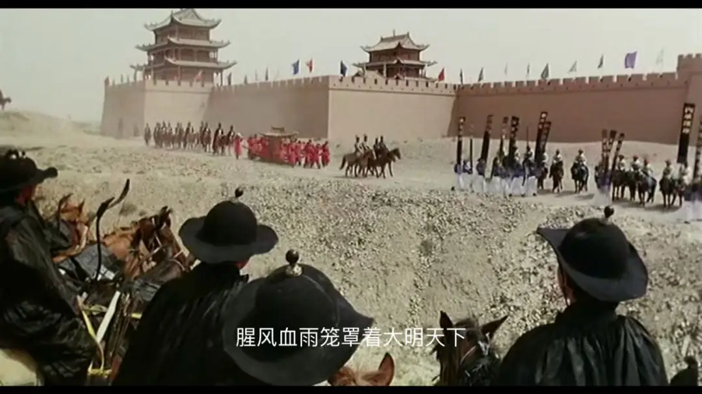
在乱世中，人们苦不堪言，膜拜着各种偶像以寻求希望，但却被这些偶像利用、压榨甚至迫害。
电影中的主人公要做的就是破除偶像，将那些欺世盗名的恶徒消灭。
-01- 倩女幽魂里的“妖魔”
《倩女幽魂》系列改编自《聊斋》，虽然讲述的是一个凄美的爱情故事，但依旧充满了徐克的乱世表达。
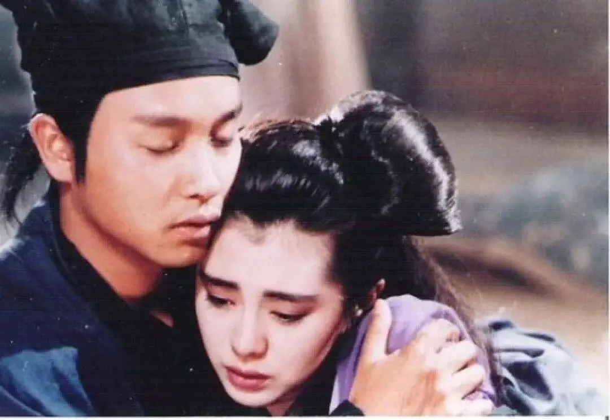
第一部的开场便可窥见一二。
宁采臣是个穷书生，为了生计不远千里去帮人收账，一路上却充满了“凶险”。
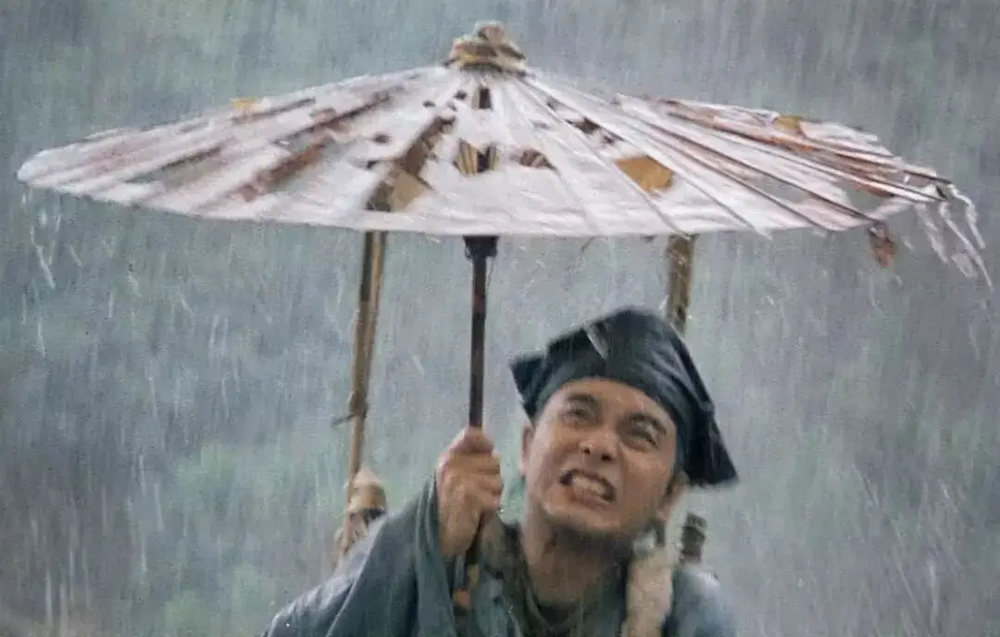
先是碰到一个剑客狂杀另一伙人，后来才知道只因为那伙人偷了剑客的钱。
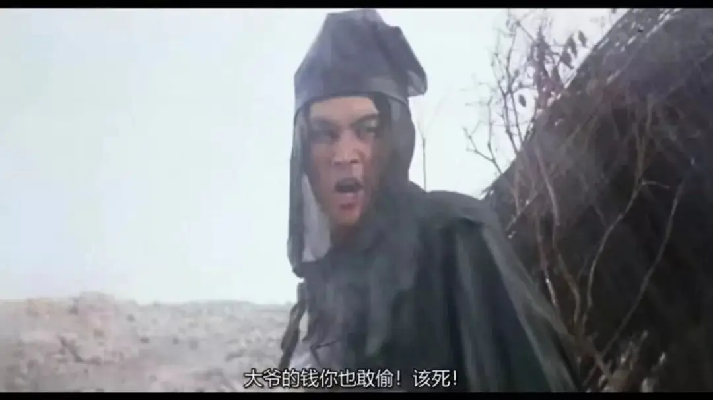
之后，宁采臣到了收账的地方，可因为账本被雨淋湿了，欠钱的人便翻脸不认账，还出言要挟。
没有收到账，落魄的宁采臣问身边的人哪里可以免费借宿一晚，却没有一个人搭理他。
终于有人说话了，却向他推荐了有去无回的兰若寺，身边也没有一个人去好心提醒一下宁采臣。
甚至有卖棺材的人急着量聂采臣的身段，以提前给“顾客”准备一副棺材。
宁采臣路上被一副美女画吸引而驻足，画商以为来了生意便笑脸相迎，可得知他身无分文后，便立马将画藏起来，还丢下一句讥讽的话：品味高，身份低的公子。
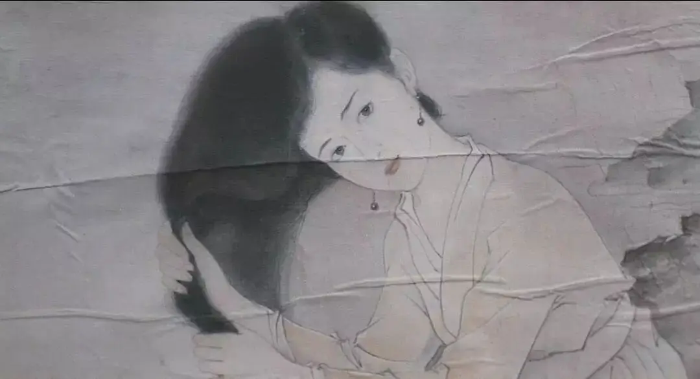
唯利是图、暴戾、弱肉强食、刻薄，这就是《倩女幽魂》里的人间背景。
燕赤霞正是因为体验了世人那些势力和虚伪，而隐居在兰若寺中。
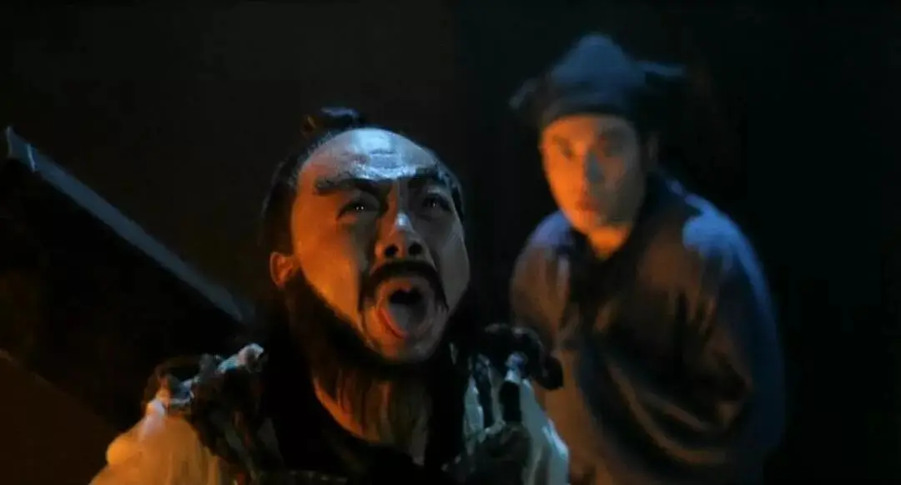
在人面前，他把自己当做是鬼，在鬼面前，他又将自己当做人。
所以变成一个脾气古怪、离群索居的怪人。
1990年，徐克“有感而发”拍了《倩女幽魂》第二部，将这种地狱般的人间世推向极致。
宁采臣一出场先是误入黑店险遭抢劫，接着又被官兵直接抓进大牢。
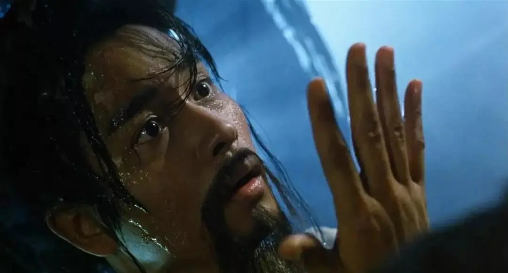
并不是因为他犯了什么事，而是捕快为了拿到悬赏随便抓人进去顶包。
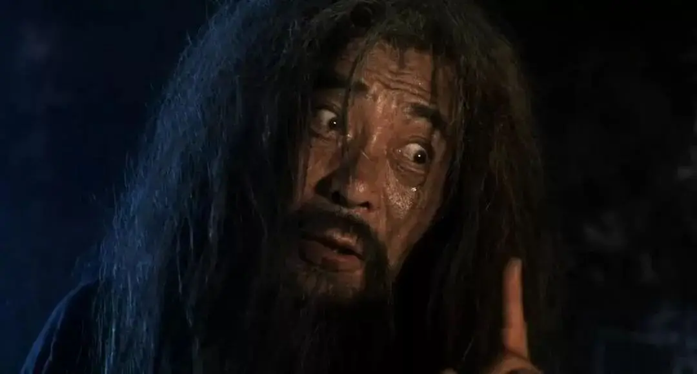
宁采臣进去后才发现冤假错案处处都是，其中有个人叫诸葛卧龙，他自嘲自己天生就是坐监狱的命：
唉！命中注定要坐监！
我祖宗没眼光，叫我好学问，著书立说，做博学士。
结果写游记，说我泄露国家机密；写历史，说我借古讽今；注解兵法，说我意图作乱；那么写神怪故事吧，又说我导人迷信。
改写名人传记好了吧？结果那个人起义造反，抓起来杀头，我就跟他一块儿，判了个终身监禁……你说是不是命中注定要坐监？唉！人生就是个牢狱啊！
更可怕的是，这些犯人要随时为权贵做替死鬼。
如果忽然有一天一个犯人要被拉去处斩，那多半是外面有某个富二代或者官二代犯了事，然后找他们来顶包。
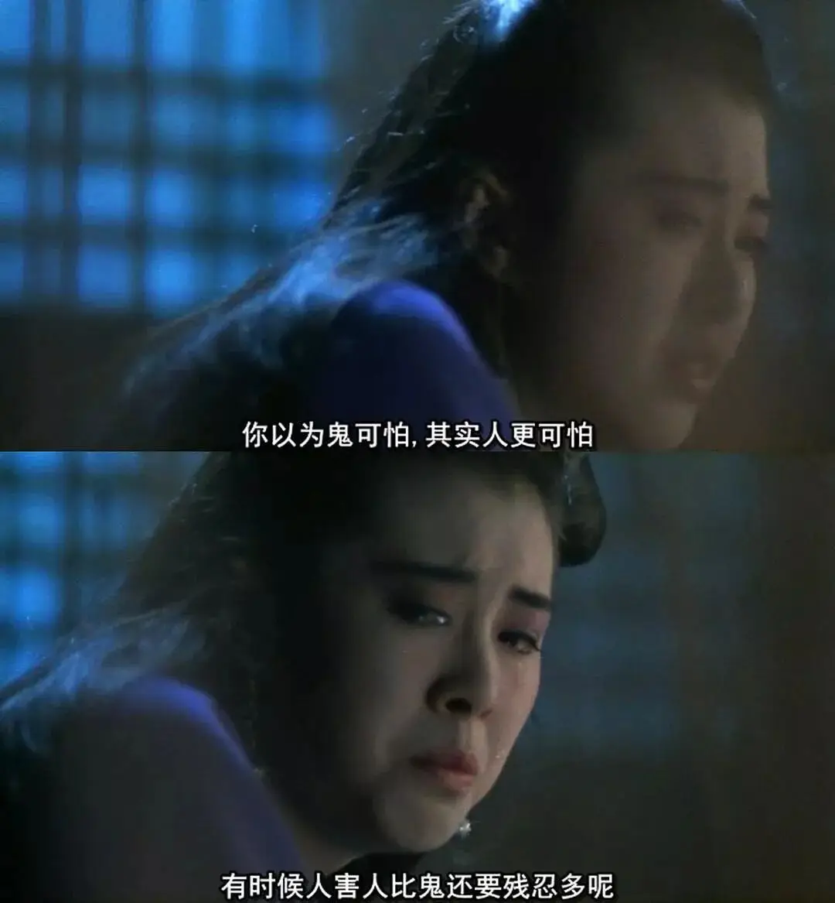
朝廷中也是奸佞当道，蝎子精化身护国国师，法号普渡慈航，表面讲着各种仁义道德，背地里却残害忠良，导致朝中大臣变成任由他摆布的行尸走肉。
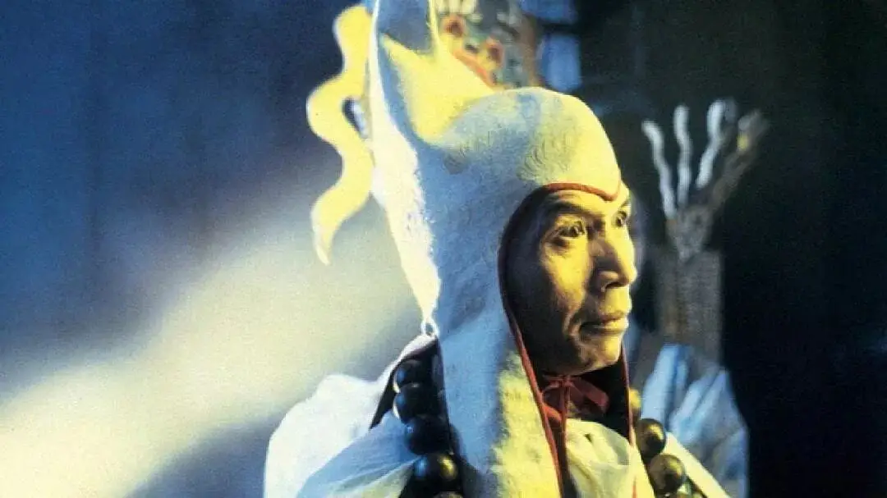
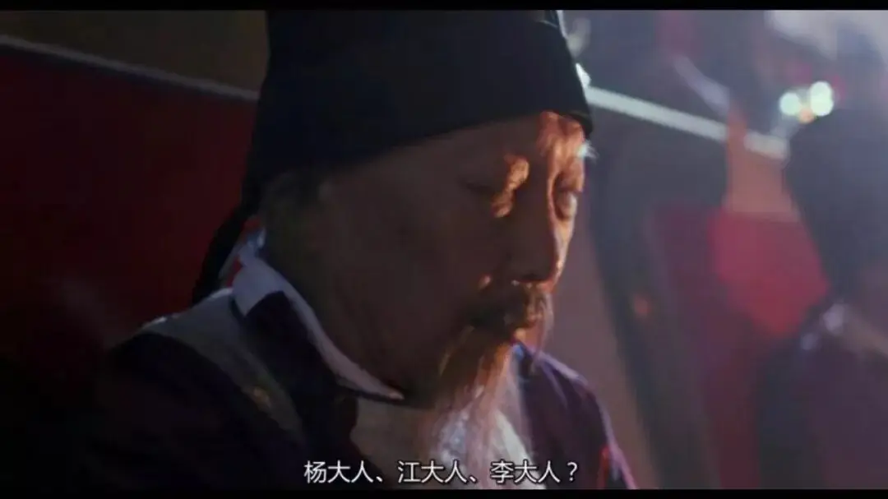
当他被燕赤霞等人识破后，他又变身如来大谈佛法、蛊惑人心。
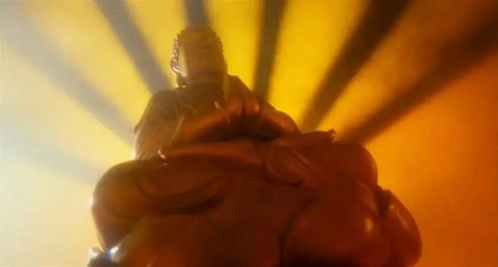
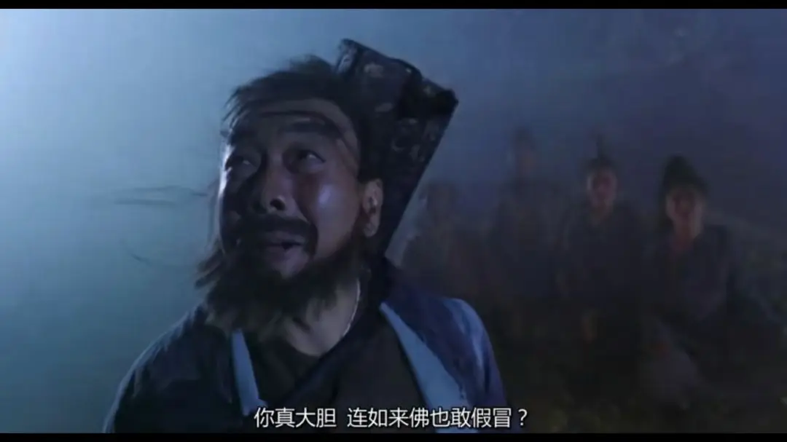
这段情节非常有意思：
宁采臣等人：你这卑鄙怪物，你别再扮下去了，连自己都信以为真的了.....你骗天下人这么久，一定要把你的面目告诉世人。
普渡慈航：世人愚昧，如无舵之舟去无定向，本活佛体念众生苦痛，给你们一个皈依的对象、追随的目标，你们竟然执迷不悟，愧负天恩！
宁采臣：「你把天下人都看成你的工具，扰乱苍生，你才愧负天恩！」
普渡慈航：「世人都喜欢崇拜偶像，为什么你们要跟世人作对。」
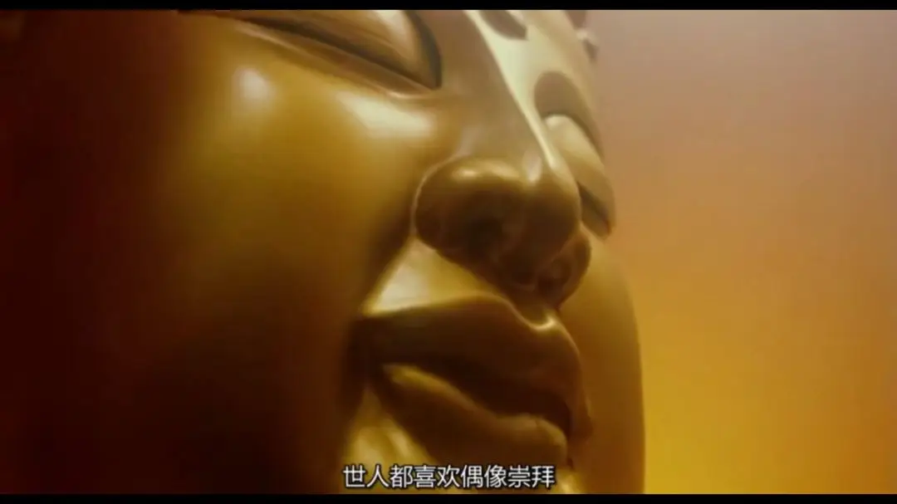
燕赤霞：「我呸！就因为世人无知，才会让你趁虚而入，就是要崇拜也不会崇拜你这个妖怪，你别想骗人了」
最终，徐克借着燕赤霞将这个虚假、嗜血的偶像打败！
-02- 东方不败
天下风云出我辈，
一入江湖岁月催。
皇图霸业谈笑中，
不胜人生一场醉。
提剑跨骑挥鬼雨，
白骨如山鸟惊飞。
尘事如潮人如水，
只叹江湖几人回。
这首诗反复出现在风清扬、令狐冲、任盈盈和东方不败的口中，它浓缩了徐克《笑傲江湖》系列的精髓。
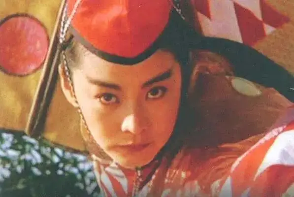
在这个腥风血雨的江湖中，至高无上的权力是各路人马要追逐的偶像，但这个偶像注定会给人带来巨大的灾难和幻灭。
金庸笔下的《笑傲江湖》虽然讲的也是一个权力斗争的故事，但是只是用江湖斗争来做影射，并没有交代明确的朝代背景，也没有官府直接参与。
徐克的改编则将权力斗争处理的更加直接现实，将故事明确放在了朝纲废弛、宦官专权的明末。
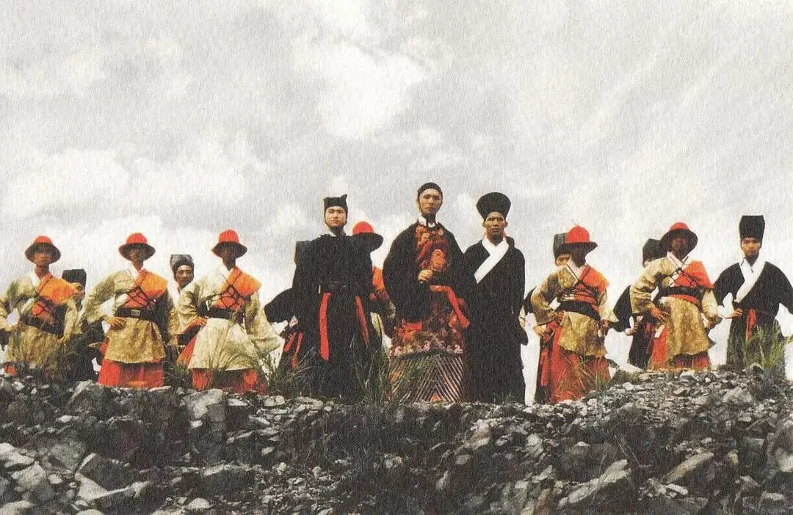
朝廷直接干预江湖大事，甚至成为矛盾的中心。
在第一部中，东厂古公公是片中最大的反派boss，五岳盟主左冷禅只是他手下的走狗，用来看门和吓唬人。
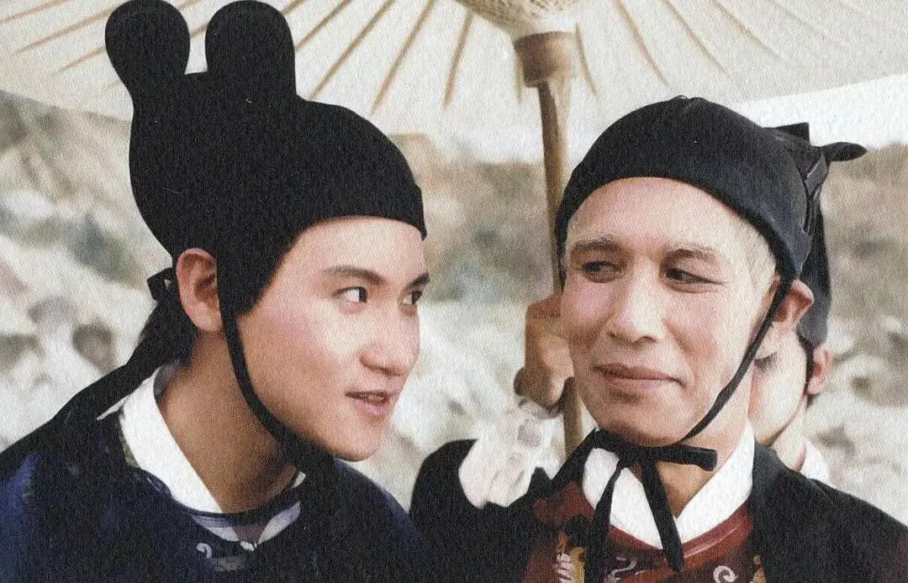
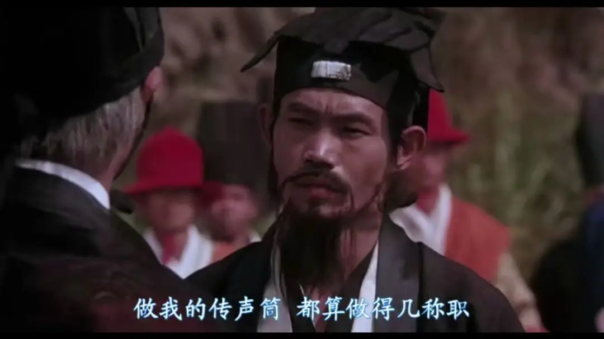
古公公阴险毒辣，就是老奸巨猾的岳不群也不得不在他面前磕头行礼。
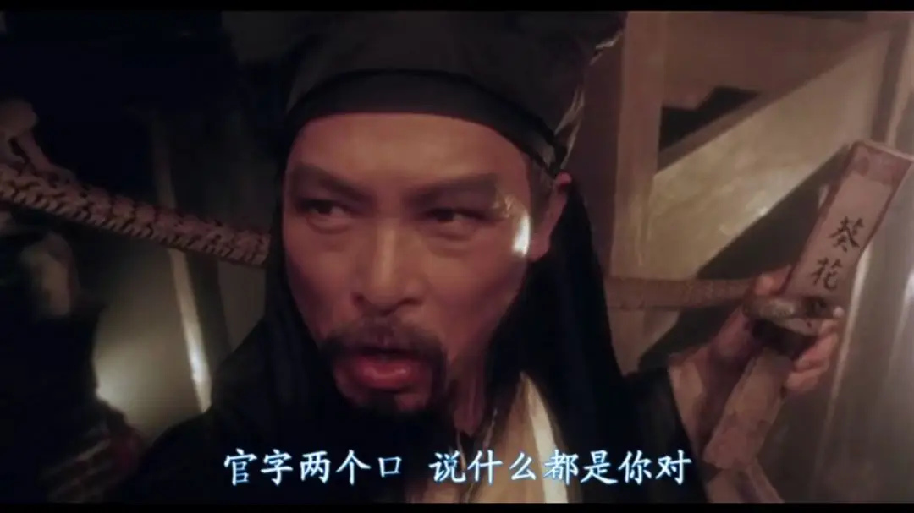
而日月神教也非原著中让江湖闻风丧胆的魔教，而是和汉人朝廷势不两立的苗族势力。
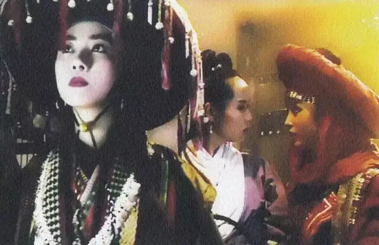
各方势力谁也看不惯谁，谁也不相信谁，有的只是彼此利用、暗算甚至赶尽杀绝。
为了获得最终的胜利，《葵花宝典》成为了各路人马苦心积虑要抢夺到的武器。
这个偶像让林平之一家灭门，让退隐江湖的刘正风和曲洋丧命，让岳不群鬼迷心窍动手残害自己的弟子和女儿......
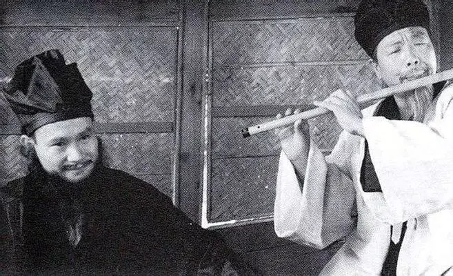
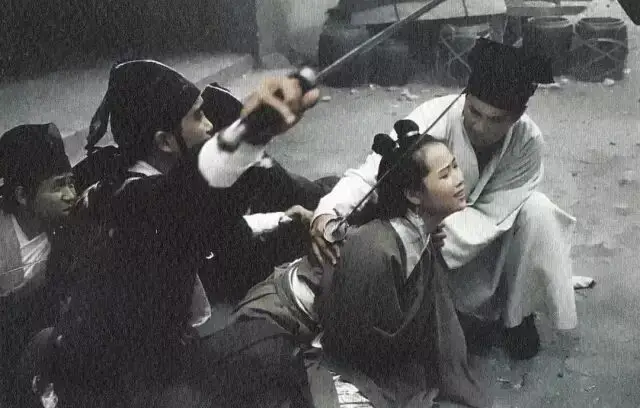
风清扬和令狐冲等人看清了权力偶像的虚伪和可怕，纷纷选择退隐，不问江湖恩怨。
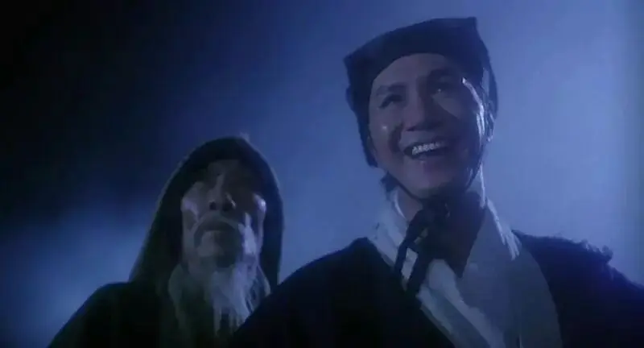
可加入江湖容易，退出很难，于是有了《笑傲江湖》第二部的故事。
这一部中的权力斗争不仅没有消减，而是愈演愈烈。
东方不败不仅成为了江湖中的霸主，更是要推翻明朝统治的敌对势力。
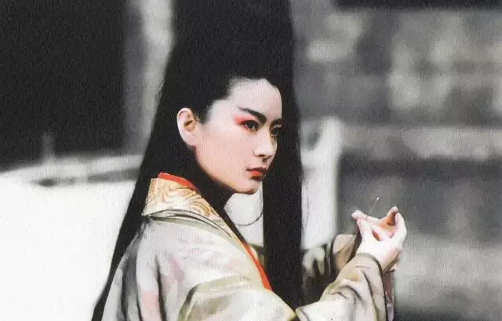
任我行被东方不败困在地牢，重获自由后势要铲除叛徒夺回日月神教教主之位。
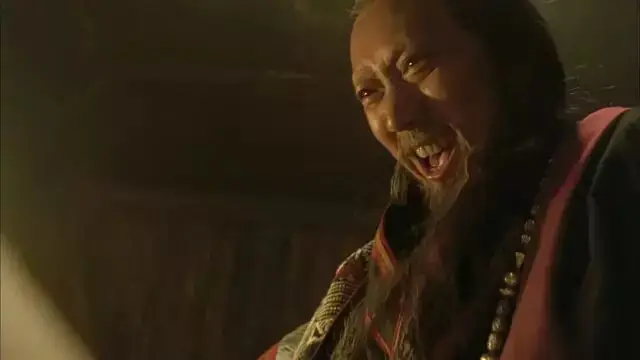
一心要退隐的华山弟子屡次开溜，却还是不可避免地卷入到这场权力之争中，并命丧东方不败之手。
仇恨让令狐冲又重新拿起了自己的剑。
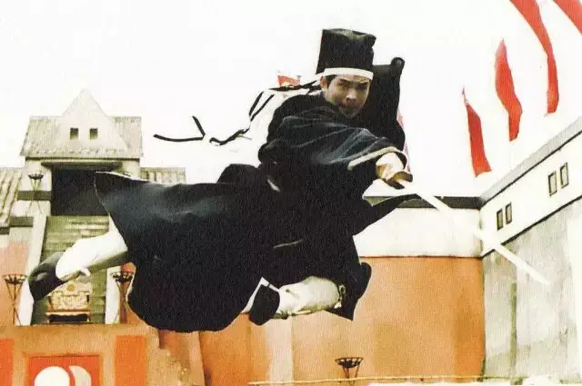
可铲除了东方不败，却又来了个任我行，唯一不变的就是斗争和杀戮。
令狐冲再强也无能为力，只能选择悲观避世。
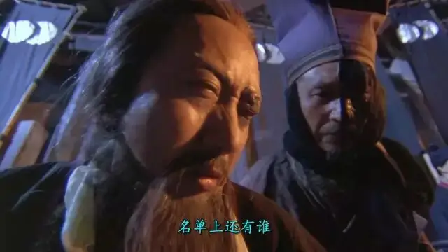
在《笑傲江湖》第三部中，偶像崇拜表现的更加直接。
东方不败坠落黑木崖选择避世忏悔，可江湖中却出现了无数个假东方不败。
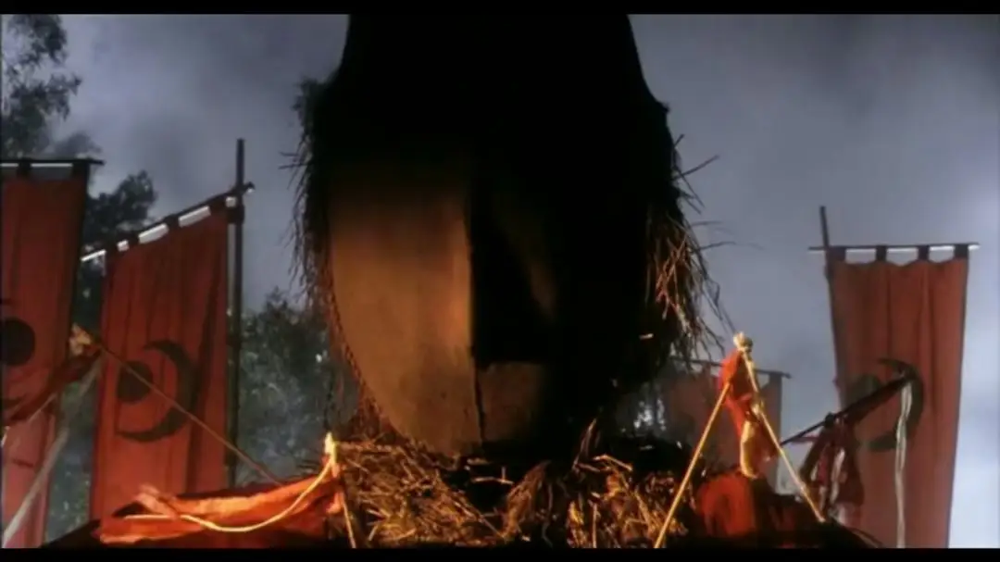
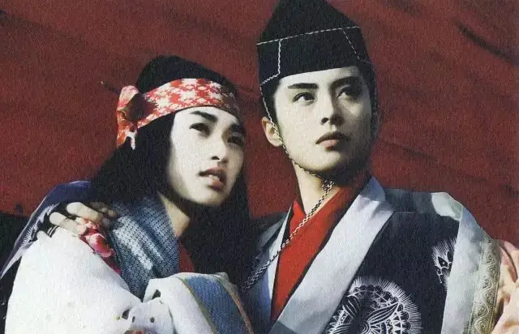
有人借他之名到处招摇撞骗，有人则直接将他奉为保护神整日膜拜。
当东方不败得知这么多荒谬之事后，他决定重出江湖将这些假偶像捣毁，不要让世人活在虚假之中。
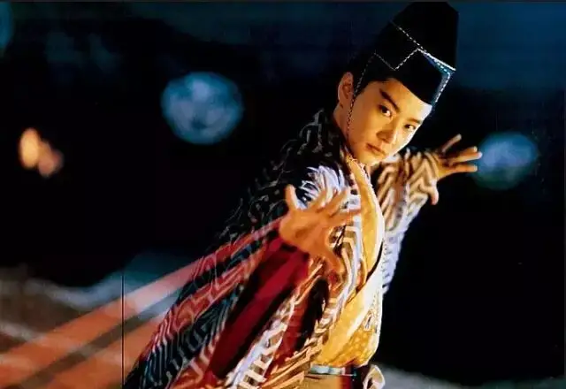
可令他想不到的是，即使真的东方不败出现，普罗大众依旧对假东方不败深信不疑。
就是东方不败将假偶像杀死，大众们依旧不会放弃对偶像的崇拜。
东方不败一气之下见人就杀，他要成魔，让天下人都恨他。
既然大家都因他痛苦，那他就要赐予众人死亡。
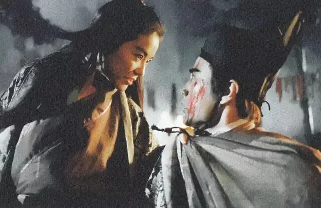
重出江湖本为救赎，却事与愿违再次沦为魔头。
偶像崇拜，不仅会让崇拜者活在虚假的希望之中，虚假的偶像也会被异化为魔鬼。
-03- 晚清迷梦
小时候看《黄飞鸿》系列，喜欢看的是无影脚和各种武打场面。
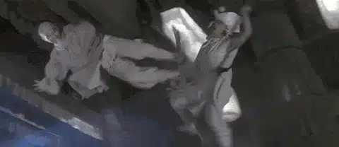
现在再看，最让我惊艳的是其中极具胸怀的历史观。
黄飞鸿系列发生在晚清，这是一个中西文化冲突的时代，有被洋人割地的民族耻辱，也有裹足不前的老佛爷，有革命派，也有保皇派，有西方的船坚炮利，也有神功护体的义和团。
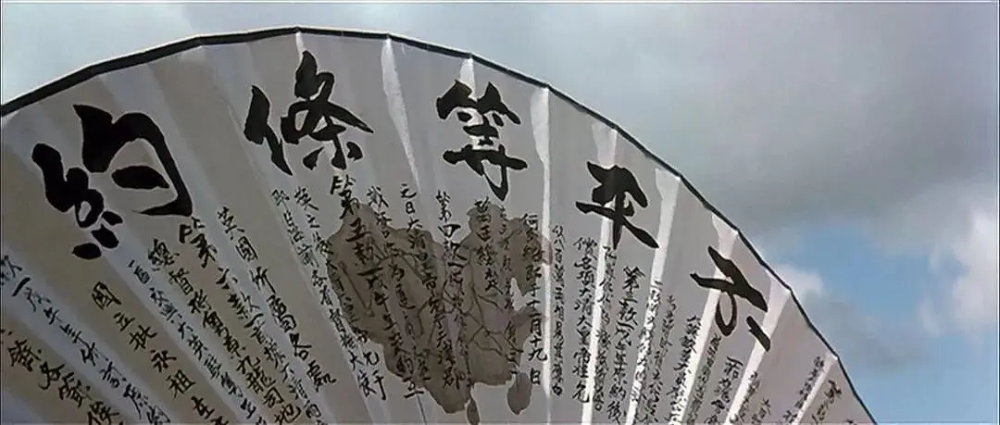
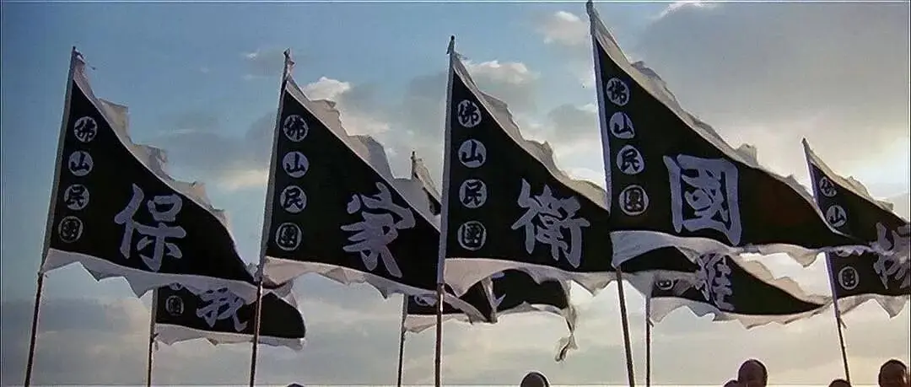
如果让大陆来拍，有一万种方式可以将这个系列拍成手撕洋鬼子系列。
但徐克的改编却不卑不亢、不保守也没有盲目崇外，借黄飞鸿的无影脚踢飞了天朝很多虚假的偶像。
首先是老佛爷的雄狮梦，在《狮王争霸》刚开始，李鸿章搞了个雄狮祝寿，这让慈禧太后非常高兴：“当着我们面说我们的海军船坚炮利，一背过面就把我们的军舰打沉.....中堂，你瞧我们的千头雄狮，还不把洋鬼子吓得阵脚大乱么”
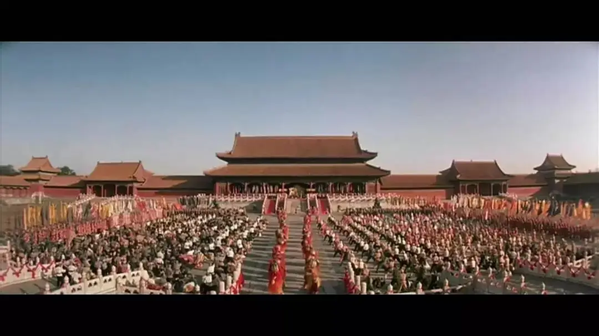
李鸿章看老佛爷高兴，接着进谏：如今俄、法、德、英、意、美、奥等国，置身我土，各怀鬼胎，依鸿章愚见，对外之计，应用以洋制洋、以夷制夷之法，令他们之间勾心斗角，我方就隔岸观火，坐享渔人之利；对内，我们鼓励习武之风，振奋民心，若能多举办如此奋发昂扬之盛事，不但可以歌颂升平，还能显示我大清帝国之神威。
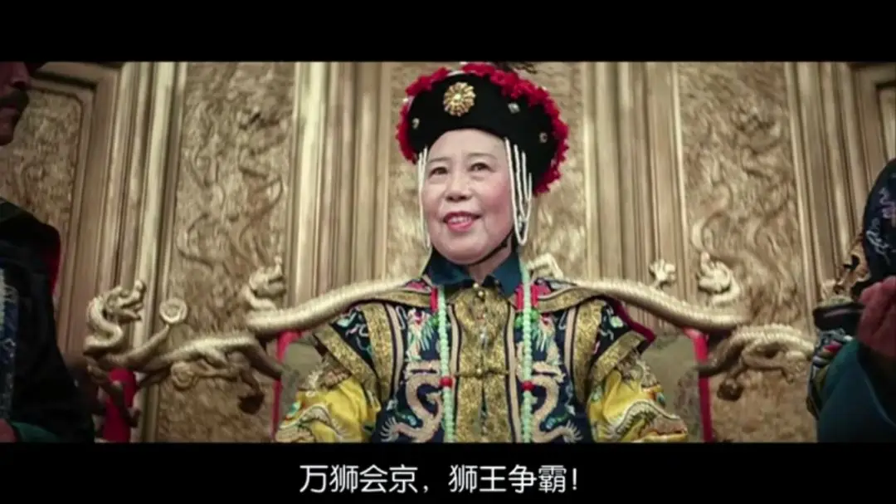
这获得了慈溪太后的赞赏，于是举全国之力，万狮会京，狮王争霸。
可上面一时兴起，却导致了武术界大内斗，死伤众多。
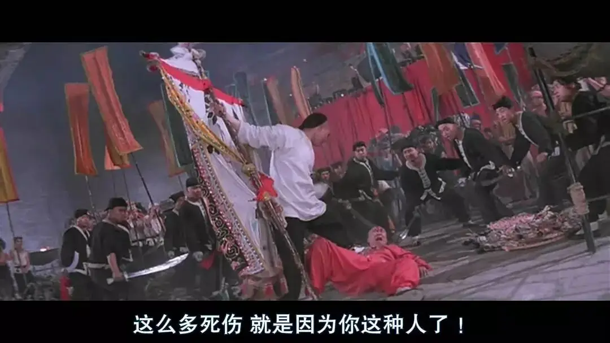
最后当黄飞鸿夺得狮王后，他质问李鸿章“到底谁赢了，谁输了？大人为了大显我民神威而举办的这场‘狮王争霸’，死伤这么多人，在世人面前，其实我们都输了。依小民之见，我们不只要练武强身、以抗外敌，最重要还是广开民智、智武合一，那才是国富民强之道。区区一个牌子，能否改变国运？还请李大人三思。这金牌，留给您做纪念吧！~告辞了！”

可天朝并没有理会黄飞鸿的建议，在《王者之风》中，雄狮成为了清廷必须要保住的面子。
八国斗狮，清朝一定要取得胜利。
可当黄飞鸿获胜后，却没有一个人为他欢呼，反而输了的外国人一阵欢呼雀跃。
黄飞鸿不解地问到底怎么回事。
原来，八国联军攻陷了北京，老佛爷也逃离了京城。
黄飞鸿不禁悲叹：我们赢了这个牌子，却输了整个江山！
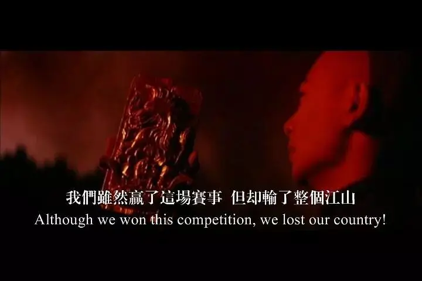
清朝沉醉于虚假的美梦中，终于还是被西方的船坚炮利惊醒了。
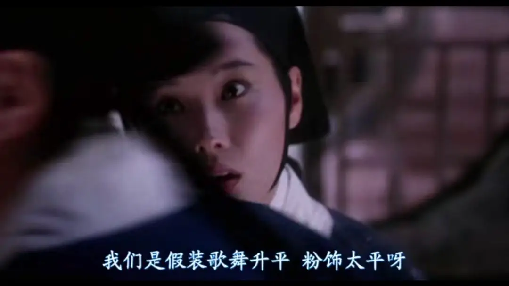
做梦不仅存在于朝廷，民间更是如此。
在黄飞鸿系列中，义和团、红灯照、白莲教反复出现，他们打着神功护体、扶清灭洋的口号烧教堂，拔铁路，杀洋人。
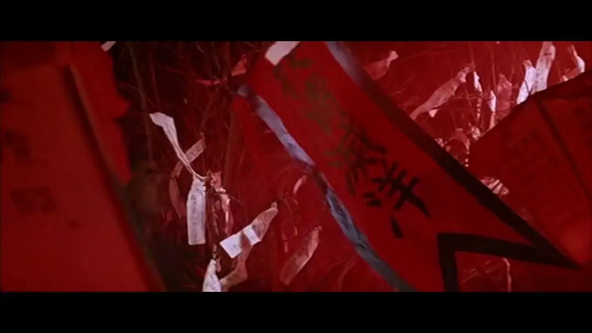
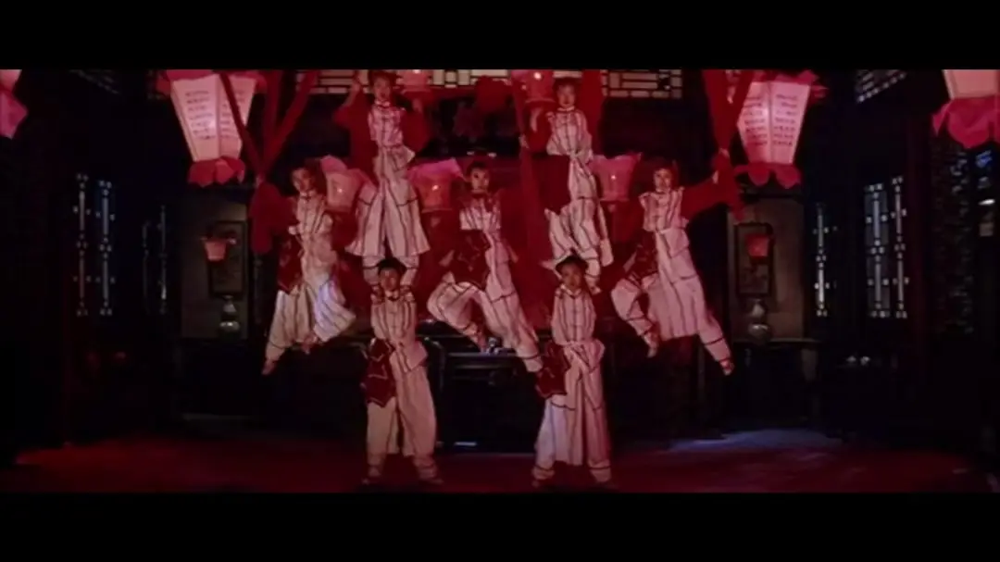
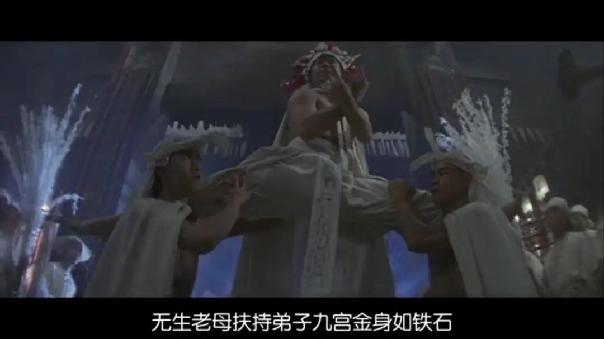
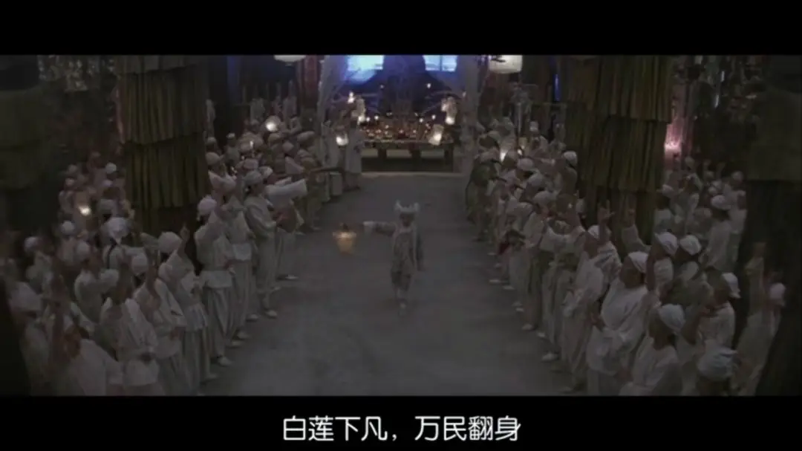
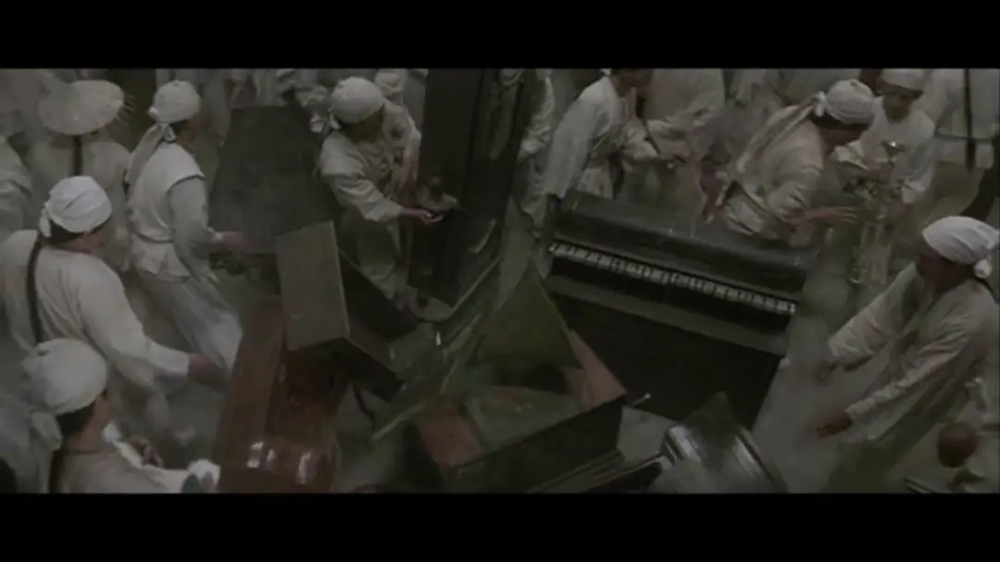
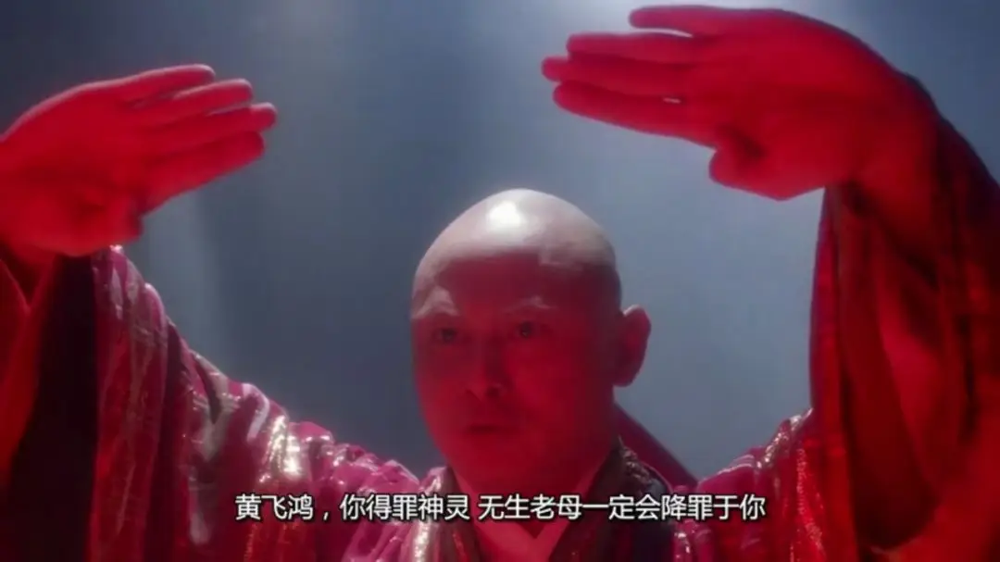
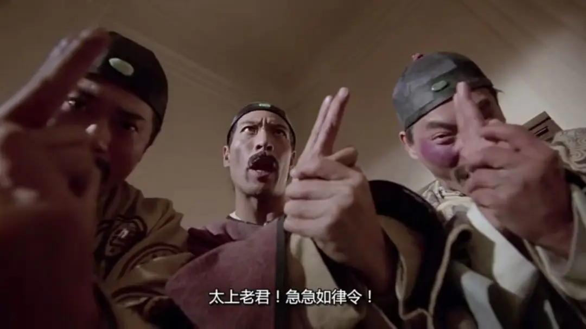
对于这些爱国贼，徐克的态度只有四个字：装神弄鬼。
所以，黄飞鸿总是用他的无影脚将这些迷信打破，只为了国人能够脚踏实地，真实地面对差距和挑战。
因此，多部电影中有很多黄飞鸿为了保护洋人、教堂而对抗拳民的情节，这种历史态度是相当难得的，一不小心就会得罪小粉红。
面对历史的巨轮，上有慈溪，下有义和团，中间是大片的阿Q，黄飞鸿的胸怀今天都值得我们深思。
面对留洋归来的十三姨，黄飞鸿并没有骂她是洋鬼子，而是透过十三姨去了解西方的世界。
黄飞鸿是很厉害的中医，但并没有固步自封，依然乐于和西方交流医术。
在教堂里，黄飞鸿也并没有排斥基督教，而是很谦卑地询问为什么西方的神都是受苦的神。
但黄飞鸿并不是跪倒在西方文明的面前，对于外国人对中国人的迫害，他依旧会勇敢地站出来，在互相尊重的基础上平等对话。
今天，有多少人有这样的胸怀！
我们虽是无神论大国，但摆在我们面前的偶像可能比任何一个民族都多。
唯有真相才能将很多虚假偶像的面具扒下来。
当黄飞鸿将刀枪不入的白莲圣母打败后，白莲教徒非常痛苦，不停地说“怎么会这样呢”。
偶像破灭虽然痛苦，但至少离真实又近了一步。
前路漫漫，各样迷梦何时会醒？
-END-
相关推荐
▼
（点击图片即可获取全文）
这里没有挑逗你眼目情欲的小鲜肉
也没有挑动你肉体情欲的段子
更没有膨胀你今生骄傲的鸡血
我们只在乎那些最质朴真诚的作品
在那里我们才能恢复真正的想象力
我们也坚信这才是我们真正需要的

ID:Six_hundred_hits
长按二维码，一键关注
【六百击】
电影评论
尽情分享朋友圈

微信二维码打赏通道